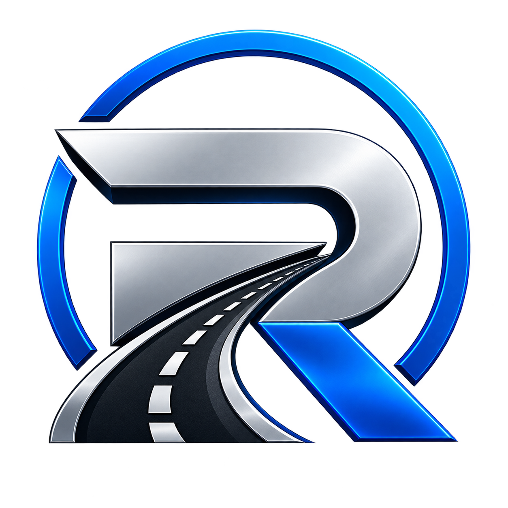

Diagnóstico da realidade
Levantamento dos controles, custos e rotina da empresa, ouvindo quem acompanha a gestão e quem está na operação.

Consultoria presencial · RodoCore
Apoio a empresários, transportadores e autônomos para entender custos, organizar processos e acompanhar melhorias em combustível, manutenção, pneus e motoristas.
Atendimento presencial no Paraná, Santa Catarina e São Paulo.
Conhecemos a realidade da operação, definimos prioridades e acompanhamos as melhorias e a evolução dos indicadores.
As visitas presenciais e sua frequência são combinadas com o cliente, conforme a modalidade e o contrato.
Veículo, carga, rota, rotina e condições de trabalho fazem parte da análise. O acompanhamento considera quem já tem sistema e quem ainda utiliza controles simples.
Clareza sobre a operação, prioridades para agir e acompanhamento para avaliar o que está mudando. O trabalho é definido com você, conforme o escopo contratado.
Levantamento dos controles, custos e rotina da empresa, ouvindo quem acompanha a gestão e quem está na operação.
Identificação dos pontos que merecem atenção, considerando impacto, segurança e capacidade de investimento do cliente.
Ações possíveis de executar, com responsáveis e prazos combinados, para organizar controles e melhorar os processos previstos no contrato.
Acompanhamento dos registros disponíveis e dos indicadores definidos, para comparar períodos, investigar desvios e ajustar as ações com a empresa.
Entregas, visitas e frequência de acompanhamento são acordadas conforme a modalidade e o contrato. Os resultados dependem das condições da operação e da execução das ações; não há promessa de economia fixa.
Não basta saber quanto saiu do caixa. É preciso entender o motivo do gasto, o resultado de cada veículo e as condições de quem está ao volante.
Analisamos os registros considerando veículo, carga, rota e condições de trabalho, para investigar diferenças sem comparar operações como se fossem iguais.
Ajudamos a organizar os gastos e seus motivos, distinguindo preventiva, corretiva, sinistros e investimentos. A causa de uma ocorrência precisa ser investigada, não presumida.
Aplicação, cuidados, vida útil, recapagem e histórico entram na análise para entender o custo dos pneus na realidade da sua frota.
Ouvimos os motoristas e a gestão para alinhar expectativas, rotina e condições de trabalho. Pessoas fazem parte da solução, não são culpadas antes da análise.
Sou Rafael Scheffer. Comecei como frentista em uma transportadora e cheguei a gestor de frota. Tenho 17 anos de experiência no transporte, sendo 14 anos trabalhando como gestor, com atuação em manutenção, pneus, combustível, relatórios, relacionamento com motoristas e implementação de processos.
Vivi a rotina da operação e a responsabilidade de cuidar dos custos, dos processos e das pessoas. Também participei da implementação da ISO 9001, ajudando a organizar processos dentro da empresa. Depois, trabalhei com vendas de recapagem e coordenação comercial.
Criei a RodoCore para colocar essa experiência a serviço de empresários, transportadores e autônomos que precisam de apoio próximo, prático e transparente, respeitando a realidade de cada cliente.
O transporte é essencial para o Brasil, e quem trabalha nessa atividade merece ser ouvido, valorizado e reconhecido.
Meu trabalho começa ouvindo empresários, motoristas e autônomos, conhecendo a rotina e entendendo as necessidades de cada operação. Com acompanhamento presencial, ajudo a identificar desperdícios, organizar processos e acompanhar melhorias para reduzir custos e melhorar os resultados, respeitando as pessoas que fazem tudo acontecer.
Uma avaliação inicial dos controles de combustível, manutenção e pneus. A consultoria aprofunda o trabalho e também considera os motoristas e os processos da operação.
Fazer avaliação inicial →Contratados separadamente da consultoria. Quando o cliente não possui um sistema e há necessidade, Rafael pode sugerir a implementação do painel Frota IA. Escopo e contratação são definidos à parte.
Conhecer o Frota IA →Já possui acesso autorizado? Entrar na Área Executiva →